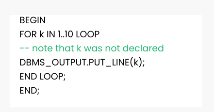

For Loop in PL/SQL
PL/SQL for loop is used when when you want to execute a set of statements for a predetermined number of times. The loop is iterated between the start and end integer values. The counter is always incremented by 1 and once the counter reaches the value of end integer, the loop ends.
Syntax of for loop:
FOR counter IN initial_value .. final_value LOOP LOOP statements; END LOOP;
Example of PL/SQL While Loop
After executing this , the output is